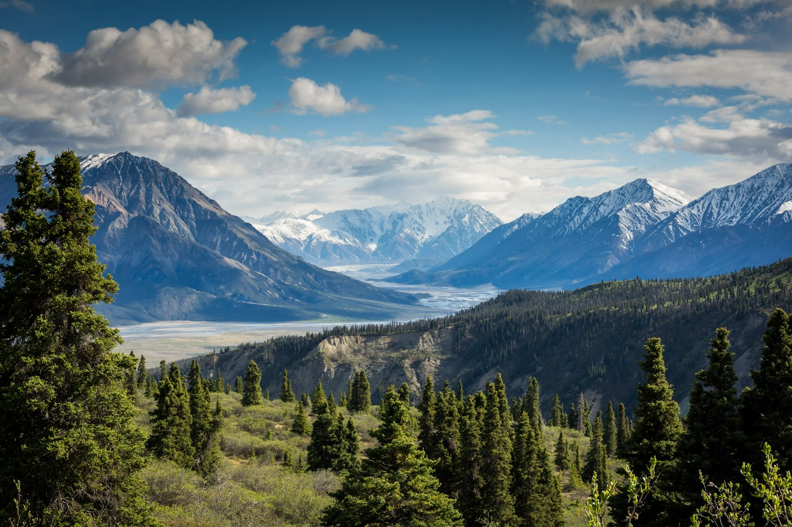
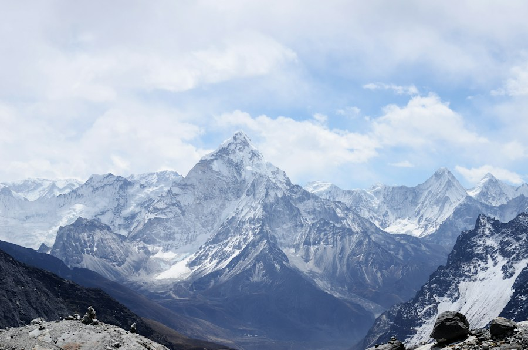
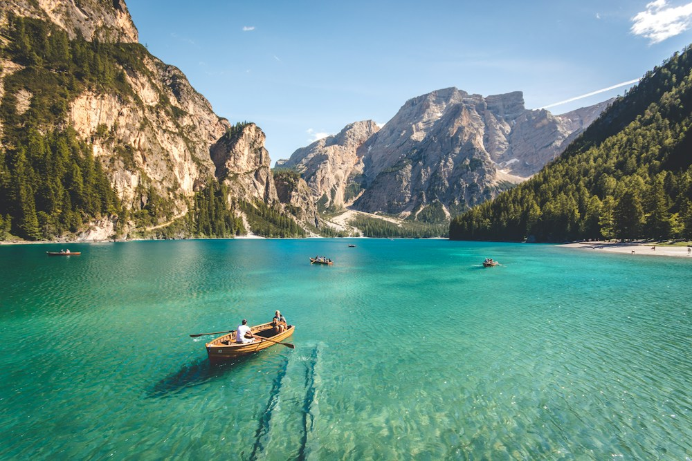
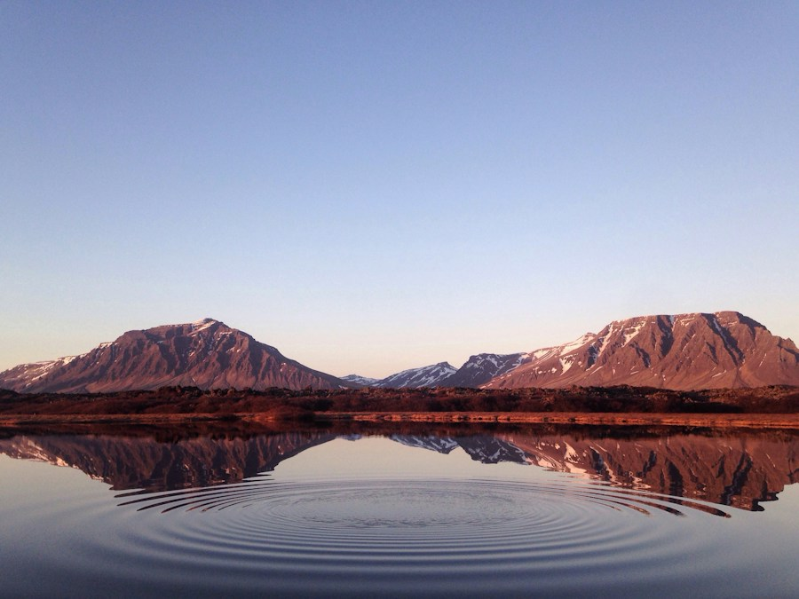
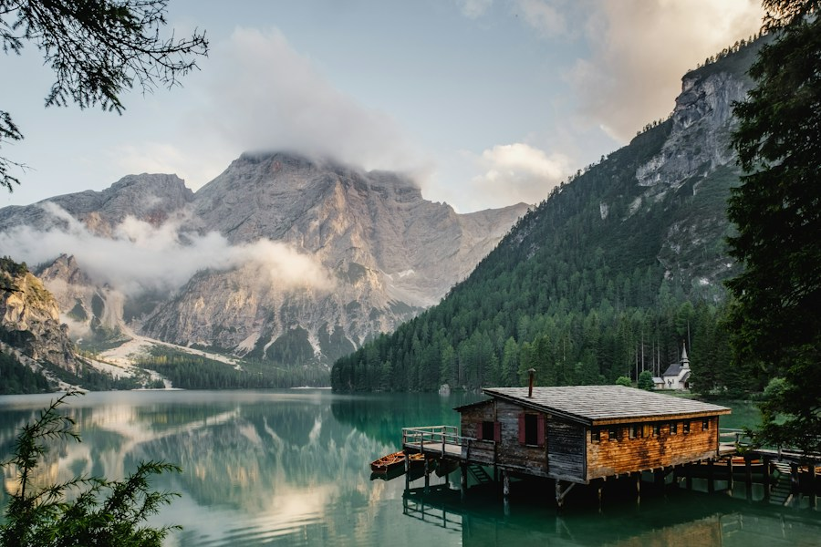
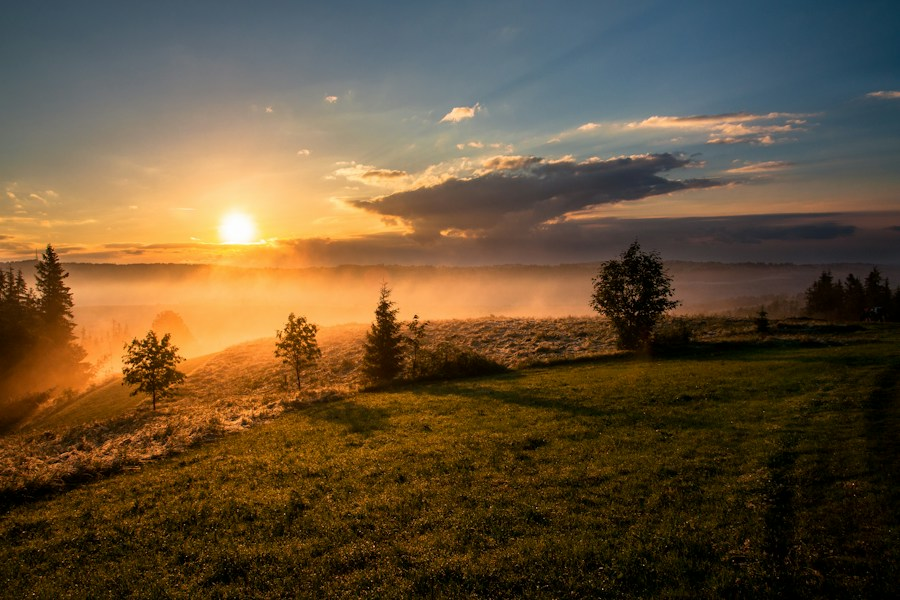
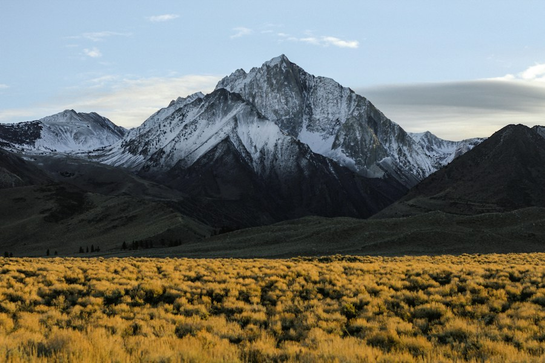

09 / VISUAL FIELD NOTES
Mountain gallery
Landscapes and learning resources from the wider climbing community. Conditions and access vary; images are inspiration, not route or safety information.







WATCH & LEARN
Video learning resources
Gallery photos are included with the website. Video search results require an internet connection. Follow land-manager rules when visiting locations shown.